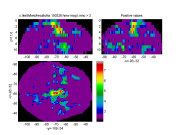

FMRISTAT
A general statistical analysis for fMRI data
All matlab programs are zipped or in the
toolbox directory (previous version here)
- you need to copy ALL the files to be able to read and write AFNI, ANALYZE and MINC formatted files.
If you are using AFNI files, you will need the
AFNI Matlab toolbox
written by
Ziad Saad. See the
AFNI example web page for more details
and a complete worked example.
If you are using
MINC formatted files you will need the extra tools in the
emma toolbox also available for
Windows and Linux.
Installing the Windows and Linux versions is a bit tricky.
In the zipped file that you download, there are .dll files and .exe files -
these must be moved to a directory in the path, e.g. matlab/bin/win32 directory.
Also you must create a directory c:/tmp or /tmp for
emma to use as scratch space.
To use FMRISTAT for PET CBF data (!), see the PET page.
Example contains all the matlab commands for the
example used here.
Data contains all the fMRI data for the
example if you want to duplicate the analysis.
Contents:
Summary of method
The latest release of fmristat
Looking at the fMRI data using pca_image
Plotting the hemodynamic response function (hrf) using fmridesign
Making the design matrices using fmridesign
Analysing one run with fmrilm
Visualizing the results using view_slices, glass_brain and blob_brain
F-tests
A linear effect of temperature
Combining runs/sessions/subjects with multistat
Fixed and random effects
Thresholding the tstat image with stat_threshold and fdr_threshold
Finding the exact resels of a search region with
mask_resels
Locating peaks and clusters with locmax
Producing an SPM style summary with stat_summary
Confidence regions for the spatial location of
local maxima using conf_region
Conjunctions
Extracting values from a minc file using extract
Estimating the time course of the response
Estimating the delay
Efficiency and choosing the best design
Functional connectivity of all voxels with a reference
Higher order autoregressive models
Summary of method
The fMRI data was first converted to percentage of whole volume.
The statistical analysis of the percentages was based on a linear model
with correlated errors. The design matrix of the linear model was first
convolved with a hemodynamic response function modelled as a difference of
two gamma functions timed to coincide with the acquisition of each slice.
Temporal drift was removed by adding a cubic spline in the frame times
to the design matrix (one covariate per 2 minutes of scan time),
and spatial drift was removed
by adding a covariate in the whole volume average. The correlation
structure was modelled as an autoregressive process of degree 1.
At each voxel, the autocorrelation parameter was estimated from
the least squares residuals using the Yule-Walker equations, after a
bias correction for correlations induced by the linear model.
The autocorrelation parameter was first regularized by spatial smoothing,
then used to `whiten' the data
and the design matrix. The linear model was then re-estimated using
least squares on the whitened data to produce estimates of effects and
their standard errors.
In a second step, runs, sessions and subjects were combined using a
mixed effects linear model for the
effects (as data) with fixed effects standard deviations taken
from the previous analysis. This was fitted using ReML implemented by the EM algorithm.
A random effects analysis was performed by first estimating the
the ratio of the random effects variance to the fixed effects variance, then
regularizing this ratio by spatial smoothing with a Gaussian
filter. The variance of the effect was then estimated by
the smoothed ratio multiplied by the fixed effects variance. The
amount of smoothing was chosen to achieve 100 effective
degrees of freedom.
The resulting T statistic images were thresholded using the minimum
given by a Bonferroni correction and random field theory,
taking into account the non-isotropic spatial correlation of the errors.
References
Liao, C., Worsley, K.J., Poline, J-B., Aston, J.A.D., Duncan, G.H., Evans, A.C. (2002).
Estimating the delay of the fMRI response.
NeuroImage, 16:593-606.
POSTER (PowerPoint)
Worsley, K.J., Liao, C., Aston, J., Petre, V., Duncan, G.H., Morales, F., Evans, A.C. (2002).
A general statistical analysis for fMRI data.
NeuroImage, 15:1-15.
POSTER (PowerPoint)
The latest release of fmristat
New theoretical results added - see
Worsley, K.J. (2005).
Spatial smoothing of autocorrelations
to control the degrees of freedom in fMRI analysis.
NeuroImage, 26:635-641.
POSTER (pdf) 26:610 M-PM
Worsley, K.J. (2005).
An improved theoretical P-value for SPMs based on discrete local maxima.
NeuroImage, 28:1056-1062. POSTER (pdf) 26:539 T-AM.
Worsley, K.J., Taylor, J.E., Tomaiuolo, F. & Lerch, J. (2004).
Unified univariate and multivariate random field theory.
NeuroImage, 23:S189-195.
Worsley, K.J., Taylor, J.E. & Tomaiuolo, F. (2004).
Roy's maximum root and maximum canonical correlation SPMs from
multivariate multiple regression analysis of imaging data.
NeuroImage, 22:WE393. POSTER (PowerPoint)
Looking at the fMRI data using pca_image
A Principal Components Analysis (PCA)
of the fMRI data is sometimes useful as an exploratory tool that does not
require any model for the data. It can reveal unexpected signals, or
outlying frames. The PCA writes the data as a sum of
temporal components times spatial components, chosen to
best approximate the fMRI data. By default, the data is normalised at each voxel by
dividing by the sd over time, so that the PCA is done in the spatial correlation matrix
rather than the spatial covariance matrix (setting the parameter ISCOV=1 will
give the unnormalised, covariance matrix analysis). To define the brain,
we use the first slice of the fMRI data as a mask.
fmri_mask_thresh
tries to find a nice threshold, in this case 452.
Pca_image produces the following
graph of the first 4 components:
input_file='c:/keith/data/test_19971124_1_100326_mri_MC.mnc';
mask_file=input_file;
mask_thresh=fmri_mask_thresh(mask_file);
pca_image(input_file, [], 4, mask_file, mask_thresh);
colormap(spectral);
The first component, with an sd of 0.68 that accounts for 46.9% of the
correlations of the data,
has extreme temporal values in the first few frames,
perhaps because the EPI scanner has not reached a steady state.
The spatial component is roughly the difference between the first
few frames and the average of the others, revealing a sharp drop in ventricles
and cortex.
The second component appears to capture a linear drift. We can
see this more clearly by excluding the first three frames as follows
(note that you don't need to specify mask_thresh,
pca_image will call
fmri_mask_thresh to find it):
exclude=[1 2 3];
V=pca_image(input_file, exclude, 4, mask_file);
Now the first component appears to have captured the linear drift around the
edges of the brain, with an sd of 0.38 that explains 14.7% of the correlations of the
fMRI data. Note that signs are arbitrary, e.g. we can change the signs
of both the time and space components. This component is saved in the
first column of V; we could use it later on as the CONFOUND parameter to
fmrilm to remove drift, instead of, or in
addition to removing spline drift.
The next two components, with sd's of 0.28 and 0.24, appear to capture
a cyclic pattern with 10 cycles that might be related to the
10 repetitions of the heat stimulus paradigm. This cyclic pattern
is expressed in the supplementary motor areas which is confirmed
below by a Partial Least Squares PLS) or model-driven analysis. The fourth component,
with an sd of 0.19, appears to be noise or perhaps the 'resting state network'.
Pca_image can also
do Partial Least Squares (PLS), i.e.
a PCA on the (normalised) coefficients from a linear model specified by a
design matrix X_interest, after removing effects from
another linear model specified by a design matrix X_remove
(Worsley et al., 1998). As
an example, we might try to do a PLS on the
time course within each block by confining the PCA to the 12 scans in each block.
To do this,
we set X_interest to a design matrix for the 12 time points within each block.
We might also remove a constant and the linear drift already detected
as the first component of the PCA above:
X_remove=[ones(120,1) (1:120)'];
X_interest=repmat(eye(12),10,1);
pca_image(input_file, exclude, 4, mask_file, [], [], [], X_remove, X_interest);
The stimulus was 3 frames each of rest, hot, rest, warm, repeated 10 times,
but delayed 6s (2 frames) by the hemodynamic response.
The first component appears to have captured a late peaking hot minus warm stimulus
effect very similar to the fmrilm analysis
(see later). The second component appears
to be capturing an earlier onset of the heat stimulus.
The rest appear to be noise.
Worsley, K.J., Poline, J.B., Friston, K.J. and Evans, A.C. (1998).
Characterizing the response of PET and fMRI data using
Multivariate Linear Models (MLM).
NeuroImage , 6:305-319.
Plotting the hemodynamic response function (hrf) using
fmridesign
The hrf is modeled as the difference of two gamma density functions (Glover, G.H. (1999).
"Deconvolution of impulse response in event-related
BOLD fMRI." NeuroImage, 9:416-429).
The parameters of the hrf are specified by a row vector whose elements are:
1. PEAK1: time to the peak of the first gamma density;
2. FWHM1: approximate FWHM of the first gamma density;
3. PEAK2: time to the peak of the second gamma density;
4. FWHM2: approximate FWHM of the second gamma density;
5. DIP: coefficient of the second gamma density.
The final hrf is: gamma1/max(gamma1)-DIP*gamma2/max(gamma2) scaled so that its total integral is 1.
If PEAK1=0 then there is no smoothing of that event type with the hrf.
If PEAK1>0 but FWHM1=0 then the design is lagged by PEAK1.
The default, chosen by Glover (1999) for an auditory stimulus, is:
hrf_parameters=[5.4 5.2 10.8 7.35 0.35]
To look at the hemodynamic response function, try:
time=(0:240)/10;
hrf0=fmridesign(time,0,[1 0],[],hrf_parameters);
plot(time,squeeze(hrf0.X(:,1,1,1)),'LineWidth',2)
xlabel('time (seconds)')
ylabel('hrf')
title('Glover hrf model')
Making the design matrices using fmridesign
Specifying all the frame times and slice times is now obligatory.
For 120 scans, separated by 3 seconds, and 13 interleaved slices every 0.12 seconds use:
frametimes=(0:119)*3;
slicetimes=[0.14 0.98 0.26 1.10 0.38 1.22 0.50 1.34 0.62 1.46 0.74 1.58 0.86];
The events are specified by a matrix of EVENTS, or directly by a stimulus design matrix S,
or both. EVENTS is a matrix whose rows are events and whose columns are:
1. EVENTID - an integer from 1:(number of events) to identify event type;
2. EVENTIMES - start of event, synchronized with frame and slice times;
3. DURATION (optional - default is 0) - duration of event;
4. HEIGHT (optional - default is 1) - height of response for event.
For each event type, the response is a box function starting at the event times, with the
specified durations and heights, convolved with the hemodynamic response function (see above).
If the duration is zero, the response is the hemodynamic response function whose integral
is the specified height - useful for ‘instantaneous’ stimuli such as visual stimuli.
The response is then subsampled at the appropriate frame and slice times to create a
design matrix for each slice, whose columns correspond to the event id number.
EVENT_TIMES=[] will ignore event times and just use the stimulus design matrix S (see next).
This is a sample run on the test data, which was a block design of 3 scans rest,
3 scans hot stimulus, 3 scans rest, 3 scans warm stimulus, repeated 10 times (120 scans total).
The hot event is identified by 1, and the warm event by 2. The events start at times
9,27,45,63... and each has a duration of 9s, with equal height:
events=[
1 9 9 1
2 27 9 1
1 45 9 1
2 63 9 1
1 81 9 1
2 99 9 1
1 117 9 1
2 135 9 1
1 153 9 1
2 171 9 1
1 189 9 1
2 207 9 1
1 225 9 1
2 243 9 1
1 261 9 1
2 279 9 1
1 297 9 1
2 315 9 1
1 333 9 1
2 351 9 1
];
or if you are good at matlab:
eventid=kron(ones(10,1),[1; 2]);
eventimes=(0:19)'*18+9;
duration=ones(20,1)*9;
height=ones(20,1);
events=[eventid eventimes duration height]
Events can also be supplied by a stimulus design matrix S (not recommended),
whose rows are the frames,
and columns are the event types. Events are created for each column, beginning at the
frame time for each row of S, with a duration equal to the time to the next frame, and
a height equal to the value of S for that row and column. Note that a constant term is
not usually required, since it is removed by the polynomial trend terms provided
N_TEMPORAL>=0.
For the same experiment:
S=[
0 0
0 0
0 0
1 0
1 0
1 0
0 0
0 0
0 0
0 1
0 1
0 1
.
.
.
(repeated 10 times)
.
.
.
];
or if you are good at matlab:
S=kron(ones(10,1),kron([0 0; 1 0; 0 0; 0 1],ones(3,1)));
Either of these give the same cache of design matrices, X_CACHE:
X_cache=fmridesign(frametimes,slicetimes,events,[],hrf_parameters);
X_cache=fmridesign(frametimes,slicetimes, [] , S,hrf_parameters);
or just
X_cache=fmridesign(frametimes,slicetimes,events);
if you are using the default hrf parameters.
To look at the two columns of the design matrix for the 4th slice:
plot(squeeze(X_cache.X(:,:,1,4)),'LineWidth',2)
legend('Hot','Warm')
xlabel('frame number')
ylabel('response')
title('Hot and Warm responses')
Analysing one run with fmrilm
First set up the contrasts. CONTRAST is a matrix whose rows are contrasts for the
statistic images, with row length equal to the number regressor variables in X_CACHE.
We wish to look for regions responding to the
hot stimulus, the warm stimulus, and the difference hot-warm:
contrast=[1 0;
0 1;
1 -1];
EXCLUDE is a list of frames that should be excluded from the analysis.
This must be used with Siemens EPI scans to remove the first few frames, which do
not represent steady-state images. Default is [1], but [1 2 3] is better:
exclude=[1 2 3];
Which_stats is a character matrix indicating which statistics for output,
one row for each row of CONTRAST. If only one row is supplied, it is used
for all contrasts. The statistics are indicated by strings, which can
be anywhere in WHICH_STATS, and outputted in OUTPUT_FILE_BASEstring.ext,
depending on the extension of INPUT_FILE. The strings are:
_mag_t T statistic image =ef/sd for magnitudes. If T > 100, T = 100.
_del_t T statistic image =ef/sd for delays. Delays are shifts of the
time origin of the HRF, measured in seconds. Note that you
cannot estimate delays of the trends or confounds.
_mag_ef effect (b) image for magnitudes.
_del_ef effect (b) image for delays.
_mag_sd standard deviation of the effect for magnitudes.
_del_sd standard deviation of the effect for delays.
_mag_F F-statistic for test of magnitudes of all rows of CONTRAST
selected by _mag_F. The degrees of freedom are DF.F. If F >
1000, F = 1000. F statistics are not yet available for delays.
_cor the temporal autocorrelation(s).
_resid the residuals from the model, only for non-excluded frames.
_wresid the whitened residuals from the model normalized by dividing
by their root sum of squares, only for non-excluded frames.
_AR the AR parameter(s) a_1 ... a_p.
_fwhm FWHM information:
Frame 1: effective FWHM in mm of the whitened residuals,
as if they were white noise smoothed with a Gaussian filter
whose fwhm was FWHM. FWHM is unbiased so that if it is smoothed
spatially then it remains unbiased. If FWHM > 50, FWHM = 50.
Frame 2: resels per voxel, again unbiased.
Frames 3,4,5: correlation of adjacent resids in x,y,z directions.
e.g. WHICH_STATS='try this: _mag_t _del_ef _del_sd _cor_fwhm blablabla'
will output t for magnitudes, ef and sd for delays, cor and fwhm.
You can still use 1 and 0's for backwards compatibility with previous
versions - see help from previous versions.
which_stats='_mag_t _mag_sd _mag_ef _mag_F _cor _fwhm';
Input minc file for one session, and output base for each row of CONTRAST
(hot for hot, wrm for warm, hmw for hot-warm):
input_file='c:/keith/data/test_19971124_1_100326_mri_MC.mnc';
output_file_base=['c:/keith/test/results/test_100326_hot';
'c:/keith/test/results/test_100326_wrm';
'c:/keith/test/results/test_100326_hmw'];
The big run:
fmrilm(input_file, output_file_base, X_cache, contrast, exclude, which_stats)
and the output gives
fwhm_data =
8.7855
fwhm_cor =
12.4444
df =
resid: 110
cor: 1235
t: [103 103 99]
F: [2 102]
The estimated fwhm of the data is fwhm_data=8.7855mm, and the amount of
smoothing chosen for the
autocorrelation parameters is fwhm_cor=12.4444mm. This achieves df's of
103 103 99 for each of the T statistics, and 2 102 df for the F
statistic. Note that the numerator df of F is 2, not 3, because
the third contrast is a linear combination of the first two. The files
generated are:
c:/keith/test/results/test_100326_hot_cor.mnc
c:/keith/test/results/test_100326_hmw_mag_t.mnc
c:/keith/test/results/test_100326_hmw_mag_ef.mnc
c:/keith/test/results/test_100326_hmw_mag_sd.mnc
c:/keith/test/results/test_100326_hot_mag_t.mnc
c:/keith/test/results/test_100326_hot_mag_ef.mnc
c:/keith/test/results/test_100326_hot_mag_sd.mnc
c:/keith/test/results/test_100326_wrm_mag_t.mnc
c:/keith/test/results/test_100326_wrm_mag_ef.mnc
c:/keith/test/results/test_100326_wrm_mag_sd.mnc
c:/keith/test/results/test_100326_hot_fwhm.mnc
c:/keith/test/results/test_100326_hot_mag_F.mnc
To look at slice 3 (zero based) or slice 4 (one based)
of the t-statistic for hot-warm try
t_file='c:/keith/test/results/test_100326_hmw_mag_t.mnc';
m=fmris_read_image(t_file,4,1);
imagesc(m.data',[-6 6]); colorbar; axis xy; colormap(spectral);
To see the brain using the first frame of the fMRI data as a mask
(note view_slices slices start at 0, so subtract 1):
mask_file=input_file;
clf;
view_slices(t_file,mask_file,[],3,1,[-6 6]);
or to see the first 12 slices:
clf;
view_slices(t_file,mask_file,[],0:11,1,[-6 6]);
To get an SPM-style maximum intensity projection ('glass brain') above 3 try:
clf;
glass_brain(t_file,3,mask_file);

To get a 3D 'blob' plot of voxels where the T statistic > 5, coloured by the
hot - warm effect (in %BOLD), try blob_brain:
clf;
blob_brain(t_file,5,'c:/keith/test/results/test_100326_hmw_mag_ef.mnc');
title('Hot - warm, T>5, coloured by effect (%BOLD)');
Also of interest is the lag 1 autocorrelation smoothed by
fwhm_cor=12.4444mm (see above), which is much higher (~0.3) in cortical
regions
cor_file='c:/keith/test/results/test_100326_hot_cor.mnc';
clf;
view_slices(cor_file,mask_file,0,3,1,[-0.15 0.35]);
The estimated FWHM of the data
is close to 6 mm outside the brain (due to motion correction), but much
higher (~12mm) in cortical regions, averaging to fwhm_data=8.7855 in the
whole brain (see above):
fwhm_file='c:/keith/test/results/test_100326_hot_fwhm.mnc';
clf;
view_slices(fwhm_file,mask_file,0,3,1,[0 20]);
F-tests
F-tests should only be used when we are interested in any linear combination
of the contrasts. For example, an F-test would be appropriate for
detecting regions with high temproal trend or drift, since we would be interested in
either a linear, quadratic or cubic trend, or any linear combination
of these. The drift terms appear in the order
constant, linear, quadratic, cubic etc. so to test for a drift, use 'contrast.T'
(T for temporal trend) as follows:
contrast.T=[0 1 0 0;
0 0 1 0;
0 0 0 1]
which_stats='_mag_F';
output_file_base='c:/keith/test/results/test_100326_drift';
fmrilm(input_file,output_file_base,X_cache,contrast,exclude,which_stats,cor_file)
fwhm_data =
8.7855
fwhm_cor =
12.4444
df =
resid: 110
cor: 1235
t: [95 95 96]
F: [3 95]
Note that by setting the fwhm_cor parameter with the cor_file name
c:/keith/test/results/test_100326_hot_cor.mnc we avoid re-calculating the autocorrelations.
To visualize the regions with significant drift:
clf;
view_slices('c:/keith/test/results/test_100326_drift_mag_F.mnc',mask_file,[],0:11,1,[0 50]);
stat_threshold(1000000,26000,8,[3 95])
Note that we can use stat_threshold
to find the threshold for significant drift (P<0.05), which is ~11.39 (the F statistic has df.F = 3 95) (see
later). Another good use of the F-test is for detecting effects when the
hemodynamic response is modelled by a set of basis functions
(see Estimating the time course of the response ).
A linear effect of temperature
Instead of using just two values (hot=49oC, and low=35oC), suppose
the temperature of the stimulus varied 'randomly' over the 20 blocks, taking 5 equally
spaced values between 35 and 49:
temperature=[45.5 35.0 49.0 38.5 42.0 49.0 35.0 42.0 38.5 45.5 ...
38.5 49.0 35.0 45.5 42.0 45.5 38.5 42.0 35.0 49.0]';
To model a linear effect of temperature (see Figure (a) below), use one event type
with height=1 and another with a height=temperature:
events=[zeros(20,1)+1 eventimes duration ones(20,1);
zeros(20,1)+2 eventimes duration temperature]
The following contrasts will estimate first the slope of the temperature effect
(per oC), then the hot, warm and hot-warm effects exactly as before:
contrast=[0 1;
1 49;
1 35;
0 14];
To model a quadratic effect of temperature (Figure b), add a third event type with
a height equal to the temperature2:
events=[zeros(20,1)+1 eventimes duration ones(20,1);
zeros(20,1)+2 eventimes duration temperature;
zeros(20,1)+3 eventimes duration temperature.^2]
contrast=[0 0 1];
The contrast will test for a quadratic effect. Taking this further, we may wish
to test for a cubic (Figure c), quartic (Figure d) or even a 'non-linear' effect
of temperature, where the temperature effects are arbitrary. Note that the
quartic model is identical to the arbitrary model because a quartic can be
fitted exactly to any arbitrary 5 points. To model the arbitrary effect,
simply assign a different event type from 1 to 5 for each of the 5 different
temperature values:
events=[floor((temperature-35)/3.5)+1 eventimes duration ones(20,1)]
To look for any effect of the stimulus compared to baseline, use:
contrast=[1 0 0 0 0;
0 1 0 0 0;
0 0 1 0 0;
0 0 0 1 0;
0 0 0 0 1]
contrast=eye(5)
which_stats='mag_F';
The resulting F statistic image will have 5 and 107 d.f.. To see if the
changes in temperature have any effect, subtract the average from each
row of the contrasts:
contrast=[.8 -.2 -.2 -.2 -.2;
-.2 .8 -.2 -.2 -.2;
-.2 -.2 .8 -.2 -.2;
-.2 -.2 -.2 .8 -.2;
-.2 -.2 -.2 -.2 .8]
contrast=eye(5)-ones(5)/5
which_stats='mag_F';
The resulting F statistic image will have 4 and 107 d.f.. To see if the
changes in temperature have a linear effect, subtract the average
from the 5 temperature values:
contrast=[-7.0 -3.5 0 3.5 7.0];
which_stats='_mag_t _mag_ef _mag_sd';
This will produce a T statistic with 107 d.f.. How is this different
from the previous linear effect? The effect is the same, but the
standard deviation may be slightly different. The reason is that in
this model, we are basing the standard deviation on errors about each
temperature value; in the first analysis, it is based on errors about
a linear model. As a result, the degrees of freedom is slightly
different: 112 before, but 109 here.
Combining runs/sessions/subjects with multistat
Repeat previous analysis for hot-warm for the three other sessions (note that the same
X_CACHE is used for each):
contrast=[1 0;
0 1;
1 -1];
which_stats='_mag_t _mag_ef _mag_sd';
input_file='c:/keith/data/test_19971124_1_093923_mri_MC.mnc';
output_file_base=['c:/keith/test/results/test_093923_hot';
'c:/keith/test/results/test_093923_wrm';
'c:/keith/test/results/test_093923_hmw']
fmrilm(input_file, output_file_base, X_cache, contrast, exclude, which_stats);
input_file='c:/keith/data/test_19971124_1_101410_mri_MC.mnc';
output_file_base=['c:/keith/test/results/test_101410_hot';
'c:/keith/test/results/test_101410_wrm';
'c:/keith/test/results/test_101410_hmw']
fmrilm(input_file, output_file_base, X_cache, contrast, exclude, which_stats);
input_file='c:/keith/data/test_19971124_1_102703_mri_MC.mnc';
output_file_base=['c:/keith/test/results/test_102703_hot';
'c:/keith/test/results/test_102703_wrm';
'c:/keith/test/results/test_102703_hmw']
fmrilm(input_file, output_file_base, X_cache, contrast, exclude, which_stats);
Now we can average the different sessions as follows. NOTE THAT ALL FILES MUST
HAVE EXACTLY THE SAME SHAPE (SLICES, COLUMNS, ROWS). If not, reshape them!
This is done by again setting up design matrix and a contrast:
X=[1 1 1 1]';
contrast=[1];
which_stats='_mag_t _mag_ef _mag_sd';
input_files_ef=['c:/keith/test/results/test_093923_hmw_mag_ef.mnc';
'c:/keith/test/results/test_100326_hmw_mag_ef.mnc';
'c:/keith/test/results/test_101410_hmw_mag_ef.mnc';
'c:/keith/test/results/test_102703_hmw_mag_ef.mnc'];
input_files_sd=['c:/keith/test/results/test_093923_hmw_mag_sd.mnc';
'c:/keith/test/results/test_100326_hmw_mag_sd.mnc';
'c:/keith/test/results/test_101410_hmw_mag_sd.mnc';
'c:/keith/test/results/test_102703_hmw_mag_sd.mnc'];
output_file_base='c:/keith/test/results/test_multi_hmw'
For a fixed
effects analysis (not recommended!) we set the last parameter
to Inf (see
later). The final run is:
multistat(input_files_ef,input_files_sd,[],[],X,contrast,output_file_base,which_stats,Inf)
Note that the program prints and returns the final
degrees of freedom of the tstat image, which is 396 (see discussion
later):
df =
resid: 3
fixed: 396
sdratio: Inf
t: 396
For a more elaborate analysis, e.g. comparing the first two sessions with
the next two, you can do it by:
X=[1 1 0 0; 0 0 1 1]';
contrast=[1 -1];
Fixed and random effects
In the above run, we did a fixed effect analysis, that is, the
analysis is only valid for the particular group of 4 sessions on the
test subject. It is not valid for an arbitrary session on the test
subject, nor for
the population of subjects in general. It may turn out that the
underlying effects themselves vary from session to session, and from
subject to subject. To take this extra source of variability into
account, we should do a random effects analysis.
The ratio of the random effects standard error, divided by the
fixed effects standard error, is outputted as test_multi_hmw_rfx.mnc. If there
is no random effect, then rfx should be roughly 1. If there is a
random effect, rfx will be greater than 1.
The only problem is that rfx is itself extremely noisy
due to its low degrees of freedom, which results in
a loss of efficiency. One way around this is to assume that the
underlying rfx is fairly smooth, so it can be better estimated by
smoothing rfx. This will increase its degrees of freedom, thus
increasing efficiency. Note however that too much smoothing could
introduce bias.
The amount of smoothing is controlled by the final parameter,
fwhm_varatio. It is the FWHM in mm of the Gaussian filter used to smooth the
ratio of the random effects variance divided by the fixed effects variance.
0 will do no smoothing, and give a purely random effects analysis.
Inf will do complete smoothing to a global ratio of one,
giving a purely fixed effects analysis (which we did above).
The higher the fwhm_varatio, the higher the ultimate degrees of
freedom of the tstat image,
and the more sensitive the test. However too much smoothing will
bias the results.
By giving
fwhm_varatio a negative value, it treats this as a target df, and adjusts the
smoothing to try to achieve this. The default is -100, i.e.
multistat finds the amount of smoothing
to achieve 100 df. Why 100? The idea is that even if the assumptions
underlying the df formula are wrong by a factor of 2, this will not
greatly affect the distribution of T statistics, since T statistics with
more than 50 df are very close to Gaussian. Using this default:
which_stats='_mag_t _mag_ef _mag_sd _rfx _fwhm';
output_file_base='c:/keith/test/results/test_multi_hmw'
multistat(input_files_ef,input_files_sd,[],[],X,contrast,output_file_base,which_stats)
Note that the df_data and fwhm_data of the input files (replaced by [])
are no longer necessary: df_data (99 each) are taken from the sd image
files, and fwhm_data is estimated from the ef files. The output is:
fwhm_data =
8.0202
fwhm_varatio =
19.2921
df_data =
99 99 99 99
df =
resid: 3
fixed: 396
rfx: 134
t: 100
The amount of smoothing is 19.2921mm, which gives 100 df for the tstat. The sd ratio of random to fixed effects looks like this:
clf;
view_slices('c:/keith/test/results/test_multi_hmw_rfx.mnc',mask_file,0,3,1);
Note that it is roughly 1 outside the brain and at most places inside,
indicating little random effect over the runs. The random effect sd
is about 30% higher than the fixed effect sd (rfx = 1.3) in posterior regions.
For combining over subjects, the rfx is much higher (~3) and less
smoothing should be used otherwise rfx is biased and you get more false
positives. We recommend less than 10mm smoothing (fwhm_varatio=10),
which can usually be achieved by aiming for less df, e.g. 40 df
(fwhm_varatio = -40).
The effective FWHM over runs looks very similar to that over scans, but a
lot more noisy,
clf;
view_slices('c:/keith/test/results/test_multi_hmw_fwhm.mnc',mask_file,0,3,1,[0 20]);
so some smoothing with gauss_blur
makes it easier to interpret:
blured_fwhm=gauss_blur('c:/keith/test/results/test_multi_hmw_fwhm.mnc',10);
clf;
view_slices(blured_fwhm,mask_file,0,3,1,[0 20]);
Reference:
Worsley, K.J. (2002).
Non-stationary FWHM and its effect on statistical inference of fMRI data.
NeuroImage, 15:S346.
Suppose we search c:/keith/test/results/test_multi_hmw_t.mnc for local maxima
inside a search region of 1000cc.
The voxel volume is 2.34375*2.34375*7= 38.4521, so the number of voxels
is 1000000/38.4521=26000.
There is roughly 8 mm smoothing.
The degrees of freedom returned by multistat,
is 100. By default the significance is the standard 0.05. The threshold to use is
stat_threshold(1000000,26000,8,100)
which gives 4.89. Often we we want to define a search region by a mask.
Mask_vol finds the volume of the search region,
and the number of voxels of a mask_file above a mask_thresh - if no mask_thresh is
supplied, it will attempt to fund one using
fmri_mask_thresh. Using the
raw fMRI data in mask_file to define the mask:
mask_file='c:/keith/data/test_19971124_1_100326_mri_MC.mnc';
[search_volume, num_voxels]=mask_vol(mask_file)
gives search_volume = 1183800 mm^3 (just over a litre) and num_voxels = 30786.
Using these values,
stat_threshold(search_volume,num_voxels,8,100)
gives a threshold of 4.93.
Another way of detecting significant activation
is by looking at the spatial extent of activated regions (clusters), rather than peak
height. We first set a lower threshold, usually in the range 2.5 - 4. Lower
thresholds are better at detecting large clusters, but setting it too low
invalidates the P-values. By default,
stat_threshold uses the threshold
for P=0.001 (uncorrected) which is cluster_threshold =
3.17. The resulting threshold for the spatial extent of clusters is
extent_threshold = 638 mm^3. This means that any cluster
of neighbouring voxels above a threshold of 3.17
with a volume larger than 638 mm^3 is significant at P<0.05.
Sometimes we are interested in a specific peak or cluster
e.g. the nearest peak or cluster to a pre-chosen voxel
or ROI. We don't have to search over all peaks and clusters,
so the thresholds are lower. The threshold for
peak height is then peak_threshold_1 = 4.30, and spatial extent_threshold_1 = 221 mm^3
is the extent of a single cluster chosen in advance - see Friston (1997).
Often the FWHM is estimated as an image rather than a fixed value.
The extra variability in this estimate increases P-values and thresholds. It
does not have much effect on P-values and thresholds for local maxima
if the search region is large, but it can have a strong effect on
P-values and thresholds for spatial extent.
The random noise in the FWHM is measured by the degrees of freedom
of the linear model used to estimate it.
For example, if the FWHM comes from a single run of fmrilm, then
the df of the estimated FWHM is equals the df of T statistic
image. Suppose this is 100, for comparison (actually it was 99).
To incorporate this into
stat_threshold, add an extra row to the df:
stat_threshold(search_volume,num_voxels,8,[100; 100])
The thresholds for peak height are the same, but the
thresholds for spatial extent increase slightly to extent_threshold =
683 mm^3 and extent_threshold_1 = 223 mm^3 for a pre-chosen cluster.
If the FWHM comes from
multistat, two degrees of freedom are required: the first is the
residual degrees of freedom df.resid, equal to the
number of runs - number of parameters in the model = 4 - 1 = 3, and the second is df.t, the effective
degrees of freedom after smoothing the rfx = 100 (output as the
first parameter of multistat). These are put into the second row of a 2 x 2 matrix as follows
(the 0 indicates that we want calculations for a t statistic):
stat_threshold(search_volume, num_voxels,8,[100 0; 3 100])
The thresholds for local maxima are the same, but the thresholds for spatial extent
jump to 1020 mm^3 and 239 mm^3 for a pre-chosen cluster.
Fdr_threshold calculates the threshold for a t or F image for
controlling the false discovery rate (FDR). The FDR is the expected
proportion of false positives among the voxels above the threshold.
This threshold is higher than that for controlling the expected proportion
of false positives in the whole search volume, and usually lower than the
Bonferroni threshold (printed out as BON_THRESH) which controls the
probability that *any* voxels are above the threshold. The threshold depends
on the data as well as the search region,
but does not depend on the smoothness of the data. We must specify a search volume,
here chosen as the first frame of the raw fMRI data thresholded at a value of mask_thresh=452:
t_file='c:/keith/test/results/test_multi_hmw_t.mnc';
fdr_threshold(t_file,[],mask_file,[],100)
The result is a threshold of 2.66, considerably lower than the random field /
Bonferroni threshold of 4.93 above. But remember that the interpretation is
different: at least 95% of the voxels above 2.66 are true signal (on average), whereas the
19 times out of 20, there will be *no* false positives in the voxels above 4.93.
References:
Benjamini, Y. & Hochberg, Y. (1995). Controlling the false discovery
rate: a practical and powerful approach to multiple testing. Journal of
the Royal Statistical Society, Series B, 57:289-300.
Friston, K.J. (1997). Testing for anatomically specified regional
effects. Human Brain Mapping, 5:133-136.
Genovese, C.R., Lazar, N.A. & Nichols, T.E. (2002).
Thresholding of statistical maps in functional neuroimaging using the false
discovery rate. NeuroImage, 15:722-786.
Worsley, K.J., Marrett, S., Neelin, P., Vandal, A.C.,
Friston, K.J., and Evans, A.C. (1996).
A Unified Statistical Approach for Determining Significant Signals in
Images of Cerebral Activation.
Human Brain Mapping, 4:58-73.
Finding the exact resels of a search region with
mask_resels
For the perfectionist, there is a way of finding the exact resels
of a search region in dimensions 0,1,2,3. These are used by
stat_threshold
to get more accurate thresholds and P-values that take into account
the shape of the search region, not just its volume (see Worsley et al., 1996, above).
Up to now, stat_threshold has been assuming that
the search region is a ball, so that the resulting thresholds are slighty too
low (liberal) for non-ball shaped regions.
Mask_resels will find the exact resels of
any search region defined by a mask_file above mask_thresh (if mask_thresh is not
provided, it will use fmri_mask_thresh
to find one). It works by filling the
mask with a tetrahedral mesh that is warped so it touches the boundary, thus
overcoming the 'jagged boundary' problem of the method in Worsley et al. (1996).
The FWHM must also be supplied, here assumed to be 8mm:
mask_file='c:/keith/data/test_19971124_1_100326_mri_MC.mnc';
resels=mask_resels(8,[],mask_file);
the result is resels = [1 36.3 516.1 2291.6]. The first component (dimension 0)
is the Euler characteristic of the mask, which is 1 if the search region is simply
connected (topologically equivalent to a ball). The second component (dimension 1)
is 2 * caliper diameter / FWHM, the third (dimension 2) is 1/2 * surface area / FWHM^2,
and the fourth (dimension 3) is the familiar volume / FWHM^3. Note that this is
not quite the same as search_volume / 8^3 = 1183800 / 8^3 = 2312.1 found using
mask_vol. Mask_resels is more accurate - it fills the mask with tetrahedra out to
the boundary (interpolated between voxels, a bit like 'marching cubes'), whereas
mask_vol assumes that the search region is a set of box-shaped voxels surrounding
each voxel in the search region (so it has a 'jagged' boundary). Putting these
resels into stat_threshold in place of search_volume, and setting FWHM=1:
stat_threshold(resels,num_voxels,1,100)
gives peak_threshold = 4.93, peak_threshold_1 = 4.30 and
extent_threshold = 1.2425, extent_threshold_1 = 0.4310
(note these are now measured in resels, not mm^3). In other words, the results
are almost identical to what we had before. The reason is that
stat_threshold
reports the lower of the Bonferroni
threshold and the random field threshold, and in this case the Bonferroni
threshold, which depends on the number of voxels and not the resels, is lower.
To see the
difference in the random field threshold, we can set the number of voxels to infinity:
stat_threshold(resels,Inf,1,100)
5.2162
stat_threshold(search_volume,Inf,8,100)
5.2193
The returned thresholds are almost identical, so again this is just for the
perfectionist!
The *real* perfectionist might want to allow for
non-isotropic random fields as well, i.e. non-uniform FWHM. This requires quite a bit more
work. We first need to save normalised residuals from
fmrilm or multistat
(depending on which
program generated the test statistic) then replace the FWHM (before 8mm) by a
file name fwhm_info that contains these residuals:
which_stats=which_stats='_wresid';
contrast=[];
output_file_base='c:/keith/test/results/test_100326_hot';
fmrilm(input_file, output_file_base, X_cache, contrast, exclude, which_stats);
fwhm_info='c:/keith/test/results/test_100326_hot_wresid.mnc';
resels=mask_resels(fwhm_info,[],mask_file);
The result is resels =[ 1 -476.6 304.0 1639.8] which has considerable negative
caliper diameter for reasons that are not clear at the moment. Using this
again in stat_threshold,
and allowing for the variability in estimating the resels:
stat_threshold(resels,num_voxels,1,[100; 100])
The peak thresolds are the same as before because again the Bonferroni wins, but
the extent_threshold = 1.2108 and extent_threshold_1 = 0.4349 are a bit smaller
due to the smaller 3D resels. Note that the
extents are in resels, not mm^3, which allows for non-uniform FWHM.
It would not be complete without an example from multistat:
which_stats='_wresid';
contrast=[];
output_file_base='c:/keith/test/results/test_multi_hmw';
multistat(input_files_ef,input_files_sd,[],[],X,contrast,output_file_base,which_stats);
fwhm_info='c:/keith/test/results/test_multi_hmw_wresid.mnc';
resels=mask_resels(fwhm_info,[],mask_file)
stat_threshold(resels,num_voxels,1,[100 0; 3 100])
The result is resels =[1 95.4 311.7 1561.4 ], similar to what we had before, with
identical peak thresholds (because Bonferroni wins) and
extent_threshold = 1.7204 and extent_threshold_1 = 0.4669 presumably
because there is more uncertainty in estimating the resels.
Locating peaks and clusters with locmax
To locate peaks and clusters masked by the first slice if the fMRI
data, use
lm=locmax(t_file, 4.94, mask_file)
which gives a list of local maxima above 4.94, sorted in descending order.
The first column of LM is the values of the local maxima, and the next three
are the x,y,z voxel coordinates starting at 1.
The 5th column is a cluster id, and the 6th is the cluster volume.
To find P-values for these local maxima, add the list of
peak values from the first column of lm, e.g.
pval=stat_threshold(1000000,26000,8,100,lm(:,1))
Locmax can now produce a file
that has the cluster id as its values, useful for locating the clusters.
It can also produce cluster
resels as well as volumes if a FWHM scalar or file is given - see the help.
Producing an SPM style summary with stat_summary
To look at all peaks and clusters above a threshold corresponding to an
uncorrected P-value of 0.001 (default), together with a complete listing of P-values
(the best of Bonferroni, random field theory and discrete local maxima)
and false discovery rates (based on the local fwhm), use:
t_file='c:/keith/test/results/test_multi_hmw_t.mnc';
fwhm_file='c:/keith/test/results/test_multi_hmw_fwhm.mnc';
[SUMMARY_CLUSTERS SUMMARY_PEAKS]=stat_summary(t_file, fwhm_file, [], mask_file);
SUMMARY_CLUSTERS is a matrix with 6 columns:
Col 1: index of cluster, in descending order of cluster volume.
Col 2: volume of cluster in mm^3.
Col 3: resels of cluster.
Col 4: P-value of cluster extent.
Col 5: P-value if the cluster was chosen in advance, e.g. nearest to an ROI.
clus vol resel p-val (one)
1 34069 45.15 0 ( 0)
2 14189 21.05 0 ( 0)
3 12382 16.91 0 ( 0)
4 2576 2.7 0.015 (0.001)
5 2499 2.37 0.022 (0.001)
6 1577 1.83 0.044 (0.003)
7 1000 1.23 0.114 (0.008)
8 1077 1.01 0.168 (0.012)
9 461 0.93 0.196 (0.015)
10 846 0.83 0.239 (0.019)
11 385 0.81 0.252 ( 0.02)
12 461 0.67 0.333 (0.028)
13 269 0.65 0.35 (0.029)
14 1115 0.63 0.365 (0.031)
15 269 0.53 0.458 (0.042)
16 269 0.49 0.5 (0.047)
17 461 0.46 0.528 (0.051)
18 231 0.44 0.551 (0.054)
19 231 0.43 0.569 (0.057)
20 154 0.39 0.609 (0.064)
.
.
.
SUMMARY_PEAKS is a matrix with 11 columns.
Col 1: index of cluster.
Col 2: values of local maxima, sorted in descending order.
Col 3: P-value of local maxima.
Col 4: P-value if the peak was chosen in advance, e.g. nearest to an ROI.
Col 5: Q-value or false discovery rate ~ probability that voxel is not signal.
Cols 6-8: i,j,k coords of local maxima in voxels, starting at 0, as for 'register'.
Cols 9-11: x,y,z coords of local maxima in world coordinates (mm).
clus peak p-val (one) q-val (i j k) ( x y z )
1 12.65 0 ( 0) 0 (59 74 1) ( 10.5 -28.7 24.1)
1 12.51 0 ( 0) 0 (60 75 1) ( 8.2 -31 23.7)
1 11.48 0 ( 0) 0 (61 73 2) ( 5.9 -25.3 17.5)
1 11.18 0 ( 0) 0 (62 66 4) ( 3.5 -6.9 6.3)
1 10.95 0 ( 0) 0 (61 70 4) ( 5.9 -16.2 4.8)
1 10.7 0 ( 0) 0 (62 69 3) ( 3.5 -15 12.1)
1 10.01 0 ( 0) 0 (59 81 1) ( 10.5 -44.9 21.5)
1 9.9 0 ( 0) 0 (56 79 0) ( 17.6 -41.4 29.2)
1 9.51 0 ( 0) 0 (55 75 0) ( 19.9 -32.1 30.6)
1 9.45 0 ( 0) 0 (56 89 1) ( 17.6 -63.5 18.6)
1 8.62 0 ( 0) 0 (57 70 5) ( 15.2 -15.1 -2.1)
2 8.37 0 ( 0) 0 (39 62 10) ( 57.4 8.9 -33.7)
3 8.22 0 ( 0) 0 (75 61 8) ( -27 9 -19.5)
3 7.65 0 ( 0) 0 (85 64 9) (-50.4 3.2 -27.6)
3 7.51 0 ( 0) 0 (85 67 8) (-50.4 -4.9 -21.7)
3 7.49 0 ( 0) 0 (82 66 9) (-43.4 -1.5 -28.3)
1 7.46 0 ( 0) 0 (57 61 5) ( 15.2 5.7 1.2)
2 7.4 0 ( 0) 0 (52 61 10) ( 27 11.2 -33.4)
1 7.38 0 ( 0) 0 (54 85 2) ( 22.3 -53.1 13.1)
2 7.24 0 ( 0) 0 (51 62 10) ( 29.3 8.9 -33.7)
3 6.93 0 ( 0) 0 (71 61 10) (-17.6 11.2 -33.4)
1 6.45 0 ( 0) 0 (67 78 2) ( -8.2 -36.9 15.7)
2 6.26 0 ( 0) 0 (47 62 8) ( 38.7 6.7 -19.9)
5 6.22 0 ( 0) 0 (68 92 1) (-10.5 -70.4 17.5)
3 6.18 0 ( 0) 0 (72 69 9) (-19.9 -8.4 -29.4)
2 6.11 0 ( 0) 0 (47 61 10) ( 38.7 11.2 -33.4)
2 6.07 0 ( 0) 0 (46 60 10) ( 41 13.5 -33)
2 6.06 0 ( 0) 0 (51 65 9) ( 29.3 0.9 -27.9)
3 5.75 0.001 ( 0) 0 (88 67 7) (-57.4 -6 -14.8)
1 5.7 0.001 ( 0) 0 (52 83 2) ( 27 -48.5 13.9)
6 5.65 0.001 ( 0) 0 (40 67 4) ( 55.1 -9.2 5.9)
5 5.63 0.001 ( 0) 0 (67 85 1) ( -8.2 -54.2 20.1)
2 5.6 0.002 (0.001) 0 (49 69 9) ( 34 -8.4 -29.4)
14 5.59 0.002 (0.001) 0 (75 48 4) ( -27 34.7 12.9)
3 5.55 0.002 (0.001) 0 (78 62 9) ( -34 7.8 -26.8)
18 5.5 0.002 (0.001) 0 (45 74 4) ( 43.4 -25.4 3.4)
4 5.47 0.003 (0.001) 0 (40 77 8) ( 55.1 -28 -25.4)
2 5.3 0.006 (0.002) 0 (50 68 9) ( 31.6 -6.1 -29)
2 5.19 0.009 (0.002) 0 (48 69 10) ( 36.3 -7.3 -36.3)
9 5.17 0.01 (0.003) 0 (78 73 2) ( -34 -25.3 17.5)
3 5.15 0.011 (0.003) 0 (73 72 9) (-22.3 -15.3 -30.5)
4 5.13 0.011 (0.003) 0 (44 79 8) ( 45.7 -32.6 -26.1)
4 5.08 0.014 (0.004) 0 (39 77 9) ( 57.4 -26.9 -32.3)
12 5.07 0.015 (0.004) 0 (88 72 8) (-57.4 -16.4 -23.6)
6 4.99 0.021 (0.005) 0 (42 69 3) ( 50.4 -15 12.1)
3 4.94 0.025 (0.006) 0 (81 62 10) ( -41 8.9 -33.7)
8 4.94 0.025 (0.006) 0 (48 46 5) ( 36.3 40.5 6.7)
10 4.86 0.035 (0.008) 0 (69 70 7) (-12.9 -12.9 -15.9)
3 4.85 0.035 (0.008) 0 (78 65 8) ( -34 -0.2 -21)
1 4.84 0.037 (0.009) 0 (52 93 2) ( 27 -71.6 10.2)
1 4.83 0.039 (0.009) 0 (62 59 5) ( 3.5 10.4 1.9)
3 4.8 0.043 ( 0.01) 0 (79 66 8) (-36.3 -2.5 -21.4)
3 4.78 0.047 ( 0.01) 0 (82 61 10) (-43.4 11.2 -33.4)
1 4.77 0.05 (0.011) 0 (57 83 4) ( 15.2 -46.3 0.1)
4 4.74 0.055 (0.012) 0 (40 80 7) ( 55.1 -36.1 -19.6)
7 4.72 0.06 (0.013) 0 (65 65 9) ( -3.5 0.9 -27.9)
1 4.68 0.07 (0.015) 0 (57 94 2) ( 15.2 -73.9 9.8)
1 4.67 0.074 (0.015) 0 (55 71 2) ( 19.9 -20.7 18.3)
3 4.65 0.081 (0.017) 0 (87 69 9) (-55.1 -8.4 -29.4)
21 4.63 0.086 (0.017) 0 (57 78 5) ( 15.2 -33.6 -5)
2 4.51 0.139 (0.026) 0 (43 65 9) ( 48 0.9 -27.9)
17 4.5 0.144 (0.027) 0 (77 72 10) (-31.6 -14.2 -37.4)
1 4.45 0.173 (0.031) 0 (54 79 2) ( 22.3 -39.2 15.3)
2 4.22 0.386 (0.063) 0.001 (53 67 11) ( 24.6 -1.6 -42.5)
7 4.22 0.394 (0.065) 0.001 (67 66 11) ( -8.2 0.7 -42.1)
26 4.2 0.418 (0.068) 0.001 (62 56 6) ( 3.5 18.4 -3.9)
1 4.18 0.452 (0.073) 0.001 (56 82 4) ( 17.6 -44 0.4)
14 4.17 0.473 (0.076) 0.001 (78 53 4) ( -34 23.2 11.1)
8 4.16 0.479 (0.077) 0.001 (47 49 6) ( 38.7 34.6 -1.3)
2 4.15 0.494 (0.079) 0.001 (52 68 11) ( 27 -3.9 -42.8)
13 4.12 0.545 (0.086) 0.001 (63 77 5) ( 1.2 -31.3 -4.7)
22 4.09 0.614 (0.095) 0.001 (66 70 8) ( -5.9 -11.8 -22.8)
7 4.08 0.633 (0.098) 0.001 (66 67 11) ( -5.9 -1.6 -42.5)
11 4.04 0.714 (0.109) 0.001 (70 78 7) (-15.2 -31.4 -18.9)
5 4.03 0.756 (0.114) 0.001 (66 91 2) ( -5.9 -67 10.9)
3 4.03 0.758 (0.114) 0.001 (86 65 6) (-52.7 -2.4 -7.2)
5 4 0.825 (0.123) 0.001 (69 94 2) (-12.9 -73.9 9.8)
37 4 0.834 (0.124) 0.001 (91 83 7) (-64.5 -43 -20.7)
20 3.94 1.011 (0.147) 0.002 (85 81 7) (-50.4 -38.4 -20)
.
.
.
Note that 'p-values' for peaks may be greater than 1. Don't be discouraged!
In fact the 'p-value' for peaks is really the approximate expected number of peaks
above the peak height due to chance alone (in fact it is exactly
the expected Euler characteristic of the suprathreshold voxels).
If this is small (i.e. < 0.1)
it closely approximates the p-value of the peaks. Since we are usually
only interested when P<0.05, this is never a problem.
A file with _cluster before the extension is also produced
which takes as its values the cluster id, and 0 elsewhere. If you put this
into e.g. 'register' you can see where the clusters are.
A glass brain, together with a 3D rendering of the significant
clusters (which you can rotate), is produced as well:
Finally, a file with _Pval before the extension is also produced
which takes the negative of the corrected P-values (so that bigger values are more
significant and it looks better in e.g. `register') with values of -1.1 outside
the mask:
clf;
view_slices('c:/keith/test/results/test_multi_hmw_t_Pval.mnc',mask_file,0,0:11,1,[-1.1 0]);
Confidence regions for the spatial location of local maxima using
conf_region
The spatial location of a peak also has a random error due to the noise
component of the images. This error is roughly equal to
FWHM / ( sqrt(4log(2)) * PEAK ), where FWHM is the effective fwhm of the data,
and PEAK is the height of the peak. Note that higher peaks are more
accurately located, as you would expect.
This standard error assumes that the signal has a Gaussian spatial shape
with a fwhm that matches FWHM. If this is not the case, a more
robust method is based on the spatial shape of the peak itself.
Instead of estimating the standard error, we can find a confidence
region for the location by thresholding the peak at a value of
sqrt( peak^2 - chisq_pvalue), where the probability
of a chisq random variable with 3 df exceeding chisq_pvalue is the desired P-value
(chisq_pvalue = 7.81 for P-value = 0.05).
This is implemented by conf_region,
which produces a 95% (P=0.05) confidence region
image with values equal to the peak value in each confidence region.
Thresholding this image at a value of say 9 in register or
blob_brain,
produces an image of confidence regions for locations of all peaks above
9. blob_brain colours the confidence regions
by the peak height:
conf_region(t_file,4.94,mask_file)
conf_file='c:/keith/test/results/test_multi_hmw_t_95cr.mnc';
clf;
blob_brain(conf_file,9,conf_file,9)
Reference:
Ma, L., Worsley, K.J. and Evans, A.C. (1999).
Variability of spatial location of activation in fMRI and PET CBF
images.
NeuroImage, 9:S178.
(POSTER)
We might be interested in the common regions that are activated by both
the
hot and the warm stimuli, called a conjunction. In general, we might be
interested in the common regions activated by an arbitrary number of
arbitrary test statistic images. These images may be the same contrast
on different runs/subjects, or different contrasts from the same run.
The test statistics may have different df, or even be a mixture of T and
F statistics. The best way to do this is to first convert all test
statistic images to P-values using stat_summary as above.
Then the conjunction can be obtained by taking the maximum of the
p-values (or minimum of the negative p-values) and thresholding at the
desired overall p-value of say 0.05. The surviving voxels are guaranteed
to show activation on all the test statistic images, even if they are
correlated. The test can be quite stringent, since if just one image is
unactivated we will fail to detect the conjunction.
We first form the combined images of the hot and warm stimuli as above, and producing the p-value images for each:
X=[1 1 1 1]';
contrast=[1];
which_stats='_mag_t _mag_ef _mag_sd _fwhm';
input_files_ef=['c:/keith/test/results/test_093923_hot_mag_ef.mnc';
'c:/keith/test/results/test_100326_hot_mag_ef.mnc';
'c:/keith/test/results/test_101410_hot_mag_ef.mnc';
'c:/keith/test/results/test_102703_hot_mag_ef.mnc'];
input_files_sd=['c:/keith/test/results/test_093923_hot_mag_sd.mnc';
'c:/keith/test/results/test_100326_hot_mag_sd.mnc';
'c:/keith/test/results/test_101410_hot_mag_sd.mnc';
'c:/keith/test/results/test_102703_hot_mag_sd.mnc'];
output_file_base='c:/keith/test/results/test_multi_hot'
multistat(input_files_ef,input_files_sd,[],[],X,contrast,output_file_base,which_stats)
t_file='c:/keith/test/results/test_multi_hot_t.mnc';
fwhm_file='c:/keith/test/results/test_multi_hot_fwhm.mnc';
stat_summary(t_file, fwhm_file, [], mask_file);
p_file_hot='c:/keith/test/results/test_multi_hot_t_Pval.mnc';
glass_brain(p_file_hot,-0.99,p_file_hot,-1.05);
saveas(gcf,'c:/keith/test/figs/figphot.jpg');
input_files_ef=['c:/keith/test/results/test_093923_wrm_mag_ef.mnc';
'c:/keith/test/results/test_100326_wrm_mag_ef.mnc';
'c:/keith/test/results/test_101410_wrm_mag_ef.mnc';
'c:/keith/test/results/test_102703_wrm_mag_ef.mnc'];
input_files_sd=['c:/keith/test/results/test_093923_wrm_mag_sd.mnc';
'c:/keith/test/results/test_100326_wrm_mag_sd.mnc';
'c:/keith/test/results/test_101410_wrm_mag_sd.mnc';
'c:/keith/test/results/test_102703_wrm_mag_sd.mnc'];
output_file_base='c:/keith/test/results/test_multi_wrm'
multistat(input_files_ef,input_files_sd,[],[],X,contrast,output_file_base,which_stats)
t_file='c:/keith/test/results/test_multi_wrm_t.mnc';
fwhm_file='c:/keith/test/results/test_multi_wrm_fwhm.mnc';
stat_summary(t_file, fwhm_file, [], mask_file);
p_file_wrm='c:/keith/test/results/test_multi_wrm_t_Pval.mnc';
glass_brain(p_file_wrm,-0.99,p_file_wrm,-1.05);
saveas(gcf,'c:/keith/test/figs/figpwrm.jpg');
Now we find the conjunction (minimum) of the negative p-values using conjunction, which also produces a list of clusters and local maxima like stat_summary:
conjunction([p_file_hot; p_file_wrm]);
clus vol
1 192
2 77
clus peak=Pval (i j k) ( x y z )
1 0.122 (66 81 0) (-5.9 -46 28.4)
2 0.312 (56 86 2) (17.6 -55.4 12.8)
There are two clusters (no p-values for their extents yet available) and
in each cluster there is one peak whose values are in fact their own
p-values. Unfortunately neither of them is significant (P<0.05). A
glass brain of the conjunction is also produced:
Extracting values from a minc file using extract
You may want to look at the effects and their standard deviations at
some of the local maxima just found, for example the peak with
value 10.6 in slice 3 (zero based) with voxel coordinates [62 69 3]:
voxel=[62 69 3]
ef=extract(voxel,'c:/keith/test/results/test_multi_hmw_ef.mnc')
sd=extract(voxel,'c:/keith/test/results/test_multi_hmw_sd.mnc')
ef/sd
ef =
1.1198
sd =
0.1047
ans =
10.6969
which gives 1.1198 and 0.1047 respectively. Note that 1.1198/0.1047 = 10.7,
the value of the T statistic. A matrix of voxels can be given, and the corresponding
vector of values will be extracted.
To look at the time course of the data for the first run,
and compare it to the fitted values, try this:
[df,spatial_av]=fmrilm(input_file,[],[],[],exclude);
ref_data=squeeze(extract(voxel,input_file))./spatial_av*100;
ef_hot=extract(voxel,'c:/keith/test/results/test_100326_hot_mag_ef.mnc')
ef_wrm=extract(voxel,'c:/keith/test/results/test_100326_wrm_mag_ef.mnc')
fitted=mean(ref_data)+ef_hot*X_cache.X(:,1,1,voxel(3)+1) ...
+ef_wrm*X_cache.X(:,2,1,voxel(3)+1);
clf;
plot(frametimes,[ref_data fitted],'LineWidth',2);
legend('Reference data','Fitted values');
xlabel('time (seconds)');
ylabel('fMRI response, percent');
title(['Observed (reference) and fitted data, ignoring trends, at voxel ' num2str(voxel)]);
Estimating the time course of the response
We may be intersted in estimating the time course of the response,
rather than just the data as above. The easiest way
to do this might be to average the responses beginning at the start of each `epoch'
of the response, e.g. averaging the 12 scans starting at scans 1, 13, 25, ... 109.
This does not remove drift, nor does it give you a standard error. A better, though
more complex way, is to replace the block design of 2 blocks (9s hot, 9s warm) with
say 12 blocks of 3s each covering the entire epoch, then estimate their
effects with NO convolution by the hrf:
eventid=kron(ones(10,1),(1:12)');
eventimes=frametimes';
duration=ones(120,1)*3;
height=ones(120,1);
events=[eventid eventimes duration height]
events =
1 0 3 1
2 3 3 1
3 6 3 1
4 9 3 1
5 12 3 1
6 15 3 1
7 18 3 1
8 21 3 1
9 24 3 1
10 27 3 1
11 30 3 1
12 33 3 1
1 36 3 1
2 39 3 1
3 42 3 1
.
.
.
X_bases=fmridesign(frametimes,slicetimes,events,[],zeros(1,5));
The advantage of this is that it is much more flexible; it can be applied to
event related designs, with randomly timed events, even with events almost
overlaping, and the duration of the `events' need not be equal to the TR.
Moreover, the results from separate runs/sessions/subjects can be
combined using multistat.
Now all the time course is covered by events, and the baseline has disappeared,
so we must contrast each event with the average of all the other events, as follows:
contrast=[eye(12)-ones(12)/12]
ans =
0.92 -0.08 -0.08 -0.08 -0.08 -0.08
-0.08 -0.08 -0.08 -0.08 -0.08 -0.08
-0.08 0.92 -0.08 -0.08 -0.08 -0.08
-0.08 -0.08 -0.08 -0.08 -0.08 -0.08
-0.08 -0.08 0.92 -0.08 -0.08 -0.08
-0.08 -0.08 -0.08 -0.08 -0.08 -0.08
-0.08 -0.08 -0.08 0.92 -0.08 -0.08
-0.08 -0.08 -0.08 -0.08 -0.08 -0.08
-0.08 -0.08 -0.08 -0.08 0.92 -0.08
-0.08 -0.08 -0.08 -0.08 -0.08 -0.08
-0.08 -0.08 -0.08 -0.08 -0.08 0.92
-0.08 -0.08 -0.08 -0.08 -0.08 -0.08
-0.08 -0.08 -0.08 -0.08 -0.08 -0.08
0.92 -0.08 -0.08 -0.08 -0.08 -0.08
-0.08 -0.08 -0.08 -0.08 -0.08 -0.08
-0.08 0.92 -0.08 -0.08 -0.08 -0.08
-0.08 -0.08 -0.08 -0.08 -0.08 -0.08
-0.08 -0.08 0.92 -0.08 -0.08 -0.08
-0.08 -0.08 -0.08 -0.08 -0.08 -0.08
-0.08 -0.08 -0.08 0.92 -0.08 -0.08
-0.08 -0.08 -0.08 -0.08 -0.08 -0.08
-0.08 -0.08 -0.08 -0.08 0.92 -0.08
-0.08 -0.08 -0.08 -0.08 -0.08 -0.08
-0.08 -0.08 -0.08 -0.08 -0.08 0.92
exclude=[1 2 3];
which_stats='_mag_ef _mag_sd _mag_F';
input_file='c:/keith/data/test_19971124_1_100326_mri_MC.mnc';
output_file_base=['c:/keith/test/results/test_100326_time01';
'c:/keith/test/results/test_100326_time02';
'c:/keith/test/results/test_100326_time03';
'c:/keith/test/results/test_100326_time04';
'c:/keith/test/results/test_100326_time05';
'c:/keith/test/results/test_100326_time06';
'c:/keith/test/results/test_100326_time07';
'c:/keith/test/results/test_100326_time08';
'c:/keith/test/results/test_100326_time09';
'c:/keith/test/results/test_100326_time10';
'c:/keith/test/results/test_100326_time11';
'c:/keith/test/results/test_100326_time12'];
[df,
p]=fmrilm(input_file,output_file_base,X_bases,contrast,exclude,which_stats,cor_file)
We need 12 output files, but only the effect and its standard error. The F-statistic
has been requested so we can find voxels with significant responses. Its
df's are df.F = 11 101, so its critical threshold is:
stat_threshold(search_volume,num_voxels,8,df.F)
which gives 5.27. The local maxima above this are:
lm=locmax([output_file_base(1,:) '_mag_F.mnc'],5.27);
num2str(lm)
There is a peak of 9.24 at [61 67 3], very near the previous voxel [62 69 3].
The extracted effects and their standard errors at the previous
voxel are:
voxel=[62 69 3]
values=extract(voxel,output_file_base,'_mag_ef.mnc')
sd=extract(voxel,output_file_base,'_mag_sd.mnc')
Plotting these out against time gives the estimated response,
together with 1 sd error bars. Note that the times are offset
by the slicetimes, so they are in seconds starting from the
beginning of slice acquisition. On top of this we can add the
modeled response
by extracting the effects of the hot and warm stimuli, then
multiplying these effects by the hrf convolved with the 9s
blocks for hot and warm stimuli (also shown):
b_hot=extract(voxel,'c:/keith/test/results/test_100326_hot_mag_ef.mnc')
b_wrm=extract(voxel,'c:/keith/test/results/test_100326_wrm_mag_ef.mnc')
time=(1:360)/10;
X_hrf=fmridesign(time,0,[1 9 9 1],[],hrf_parameters);
hrf=squeeze(X_hrf(:,1,1));
plot((0:12)*3+slicetimes(voxel(3)+1),values([1:12 1]),'k', ...
[0:11; 0:11]*3+slicetimes(voxel(3)+1), [values+sd; values-sd],'g', ...
time,[zeros(1,90) ones(1,90) zeros(1,180)],'r', ...
time,[zeros(1,270) ones(1,90)],'b', ...
time,hrf*b_hot+hrf([181:360 1:180])*b_wrm,'g');
legend('Estimated response','Modeled response');
text(10,0.5,'Hot')
text(28,0.5,'Warm')
xlabel('time (seconds) from start of epoch');
ylabel('fMRI response, percent');
title(['Estimated and modeled response at voxel ' num2str(voxel)]);
The modeled response and the fitted response are quite close.
Note that the graph `wraps around' in time.
Estimating the delay
Rather than the whole response at one voxel, we may prefer
just one parameter, the delay, estimated at all voxels. Delays are shifts
of the time origin of the HRF, measured in seconds.
CONTRAST_IS_DELAY is a logical vector indicating if the row of CONTRAST
is a contrast in the delays (1) or magnitudes (0). Note that you cannot
estimate delays of the polynomial terms or confounds. Note that
F statistics are not yet available with this option. If the length
of CONTRAST_IS_DELAY is less then the number of contrasts, it is padded
with zeros. Default is 0, i.e. all contrasts refer to magnitudes.
Here is an example to estimate the delays of the hot, the warm
and the difference hot-warm stimuli for the above data. In this case
every contrast is a delay, so CONTRAST_IS_DELAY = [1 1 1]:
contrast=[1 0;
0 1;
1 -1]
which_stats='_del_ef _del_sd _del_t';
input_file='c:/keith/data/test_19971124_1_100326_mri_MC.mnc';
output_file_base=['c:/keith/test/results/test_100326_hot';
'c:/keith/test/results/test_100326_wrm';
'c:/keith/test/results/test_100326_hmw']
fmrilm(input_file, output_file_base, X_cache, contrast, exclude, which_stats, cor_file);
The result is the following files:
c:/keith/test/results/test_100326_hmw_del_t.mnc
c:/keith/test/results/test_100326_hmw_del_ef.mnc
c:/keith/test/results/test_100326_hmw_del_sd.mnc
c:/keith/test/results/test_100326_hot_del_t.mnc
c:/keith/test/results/test_100326_hot_del_ef.mnc
c:/keith/test/results/test_100326_hot_del_sd.mnc
c:/keith/test/results/test_100326_wrm_del_t.mnc
c:/keith/test/results/test_100326_wrm_del_ef.mnc
c:/keith/test/results/test_100326_wrm_del_sd.mnc
To visualize the results in slice 2 (zero based):
slice=2;
subplot(2,2,1);
view_slices('c:/keith/test/results/test_100326_hot_mag_t.mnc',mask_file,[],slice,1,[-6 6]);
subplot(2,2,2);
view_slices('c:/keith/test/results/test_100326_hot_del_ef.mnc',mask_file,[],slice,1,[-3 3]);
subplot(2,2,3);
view_slices('c:/keith/test/results/test_100326_hot_del_sd.mnc',mask_file,[],slice,1,[0 6]);
subplot(2,2,4);
view_slices('c:/keith/test/results/test_100326_hot_del_t.mnc',mask_file,[],slice,1,[-6 6]);
![[Click to enlarge image]](FMRISTAT_files/figdelay.jpg)
The delays and their sd (second and third figures) only make sense where
the magnitude of the response is significantly large (first figure).
The delay shift is roughly 0.5 +/- 0.6 seconds, indicating no
significant
delay shift from the Glover HRF (fourth figure).
You could also put delay effects and sdeffects from separate
runs/sessions/subjects
through multistat as before.
If a contrast involves the delays of more than one response, e.g. the
third contrast which compares the delays of the hot and warm response,
then it only makes sense to look at places where the magnitudes of all
the responses involved are large. Unfortunately there are no points where both the hot and the warm stimulus are
exceed the 4.93 threshold, so we can't compare the delays.
Note that if you ask for magnitudes as well as delays in the same analysis, i.e.
which_stats='_del_ef _del_sd _del_t _mag_t';
then the magnitude images are not quite the same as what you would get from fmrilm
without asking for delays, i.e.
which_stats='_mag_t';
The reason is that in order to calculate delays, fmrilm
replaces the convolution of the stimulus with the hrf by
the convolution of the stimulus with
two basis functions for the hrf, in the linear model. It uses
these two basis functions for every response that has a non-zero
value in any contrast in the delays, otherwise it just uses one basis
function (the hrf itself). If you want to force two basis functions
into the model for any extra responses, even though you don't want to estimate
delays in these responses, see the next parameter
NUM_HRF_BASES.
The best way of visualizing delays is to use register like this:
register c:/keith/test/results/test_100326_hot_mag_t.mnc c:/keith/test/results/test_100326_hot_del_ef.mnc
After synchronising the two images,
you can then search the tstat image in the first window
for regions of high signal e.g. >5, then
read off the estimated delay at that location from the second window.
You also use blob_brain to colour code the t stat image thresholded at 4.93 with
the delay in seconds:
clf;
blob_brain('c:/keith/test/results/test_100326_hot_mag_t.mnc',5, ...
'c:/keith/test/results/test_100326_hot_del_ef.mnc');
title('Delay (secs) of hot stimulus where T &gt; 5')
Efficiency and choosing the best design
The efficiency of a design for an effect is inversely proportional to the sd of that effect
using such a design.
The program efficiency calculates the sd of an effect
without needing any data. It simply executes all the code of fmrilm that
calculates the sd, setting the sd of the noise to 1, so the returned sd
is relative to the sd of the noise. The call
is a lot like fmrilm except that you don't supply input_file or
output_file_base, but you must supply details of the design through
X_cache from fmridesign, the contrast, and the frames to exclude.
Because it works out the sd at a single voxel, it is quite fast. It returns a matrix of sd's
for each contrast (rows) and slice (columns). For the design above:
efficiency(X_cache, contrast, exclude)
ans =
Columns 1 through 8
0.1558 0.1565 0.1559 0.1566 0.1560 0.1567 0.1561 0.1567
0.1619 0.1618 0.1619 0.1617 0.1619 0.1617 0.1618 0.1616
0.1918 0.1916 0.1918 0.1916 0.1918 0.1916 0.1917 0.1915
Columns 9 through 13
0.1562 0.1567 0.1563 0.1567 0.1564
0.1618 0.1615 0.1618 0.1613 0.1618
0.1917 0.1915 0.1917 0.1914 0.1917
The sd of the hot stimulus is about 0.156 in all 13 slices,
the warm stimulus is about the same (0.162) and the
sd for the hot-warm stimulus is larger (0.192) by about sqrt(2) since it is the difference
of two effects.
You can also get the actual linear combination of the data that is used to
estimate these effects. These weights show
how the frames are actually contributing to the effect. The array Y
(second component of the output) contains the weights for each frame (first dimension),
contrast (second dimension) and frame (third dimension).
For the first 40 frames of slice 3 (zero based):
[sd_ef, Y]=efficiency(X_cache, contrast, exclude);
slice=4;
plot(squeeze(X_cache.X(:,:,1,slice)),'LineWidth',2)
hold on; plot(Y(:,:,slice)'/max(max(Y(:,:,slice))),':','LineWidth',2); hold off
xlim([0 40])
legend('Hot resp','Warm resp','Hot wt','Warm wt','Hot - Warm wt')
xlabel('frame number')
ylabel('response')
title('Hot and Warm responses and weights')
The hot weights don't quite match the hot response
because they are adjusted for the warm response, which is not quite orthogonal
(if they were orthogonal, the weights would match the responses). The weights
of the hot-warm are in fact the hot weights minus the warm weights. The weights
are also adjusted for the drift as well; this is more evident if we have longer
blocks, e.g. the extreme case of two 90 second blocks instead of twenty 9 second blocks:
events=[1 90 90 1; 2 270 90 1]
X_cache1=fmridesign(frametimes,slicetimes,events,[],hrf_parameters);
[sd_ef, Y]=efficiency(X_cache1, contrast, exclude);
sd_ef
Columns 1 through 8
0.2770 0.2782 0.2771 0.2784 0.2773 0.2786 0.2775 0.2787
0.4297 0.4288 0.4295 0.4287 0.4294 0.4286 0.4292 0.4285
0.5460 0.5467 0.5461 0.5469 0.5461 0.5470 0.5462 0.5471
Columns 9 through 13
0.2777 0.2789 0.2778 0.2790 0.2780
0.4291 0.4283 0.4290 0.4282 0.4289
0.5464 0.5472 0.5465 0.5472 0.5466
slice=4;
plot(squeeze(X_cache1.X(:,:,1,slice)),'LineWidth',2)
hold on; plot(Y(:,:,slice)'/max(max(Y(:,:,slice))),':','LineWidth',2); hold off
legend('Hot resp','Warm resp','Hot wt','Warm wt','Hot - Warm wt')
xlabel('frame number')
ylabel('response')
title('Hot and Warm responses and weights')
Now the sd of the effects are much larger (this is a less efficient design), particularly for the
warm stimulus. Part of the reason is that the responses are now correlated (confounded) with
the cubic drift. This can be seen more clearly in the plot of the weights, which
are concentrated at the beginning and end of the blocks (particularly for the warm stimulus).
In other words, because the long blocks look a bit like drift, most of the information about
the response comes from the frames when the stimulus is changing rapidly. The steady
state of the response in the middle of the blocks is not providing much information because it
is indistinguishable from (condfounded with) drift. This also explains why this design is less
efficient: the extra frames in the middle of the blocks are wasted because they don't contribute
to the effect. This is reflected in the increased sd of the effects, as already noted.
efficiency can also be used to find the sd of
delays as well as magnitudes. Interestingly, the sd is in seconds irrespective of the data.
This sounds a little strange, but if you think about it, delay estimation does not depend on the
scaling of the data. To do this, just set contrast_is_delay to 1 where you want sd's of
delays instead of magnitudes. For a temporal correlation of 0.3 (typical of cortex), cubic
drift, and no confounds:
rho=0.3;
n_temporal=3;
confounds=[];
contrast_is_delay=[1 1 1];
efficiency(X_cache, contrast, exclude, rho, n_temporal, confounds, contrast_is_delay)
ans =
Columns 1 through 8
0.5543 0.5542 0.5543 0.5542 0.5542 0.5542 0.5542 0.5543
0.5564 0.5593 0.5566 0.5598 0.5570 0.5603 0.5574 0.5608
0.8700 0.8724 0.8701 0.8728 0.8703 0.8733 0.8706 0.8738
Columns 9 through 13
0.5542 0.5544 0.5542 0.5544 0.5542
0.5579 0.5612 0.5583 0.5618 0.5588
0.8710 0.8742 0.8714 0.8747 0.8718
which gives you about 0.55 seconds sd for estimating delays, and about
0.87 seconds for their difference.
By looping through a variety of choices of stimulus duration and interstimulus interval,
you can find out which combination gives the best design. The code is given in
example.m, but the result is:
(a) A stimulus duration and interstimulus interval of about 8 seconds seems to be
optimal for estimating the hot stimulus (the same is true of the warm stimulus).
Fortunatley any values in the range 6 to 16 seem to be close to optimal.
(b) A stimulus duration of about 9 seconds and NO interstimulus interval seems to
be optimal for hot-warm - this makes sense, because there is no need for the rest
periods between the hot and warm stimuli. Again anything in the range 5 to 20 seems to
be equally good, and short stimuli should be avoided.
(c) For delays, shorter bloocks are optimal, attaining
sd's of about 0.2 seconds. Note that for very short blocks the sd of the
magnitude is too large to reliably estimate the delay (black areas).
(d) Again shorter blocks seem to be better for delay differences.
Event related designs can be handled by setting the duration to zero.
For a fixed number of events,
we tried three different designs: equally spaced events ('uniform'),
randomly spaced events ('random'), and all the events concentrated together at a single
time point in the middle of the frames ('concentrated'). This last design is
an extreme case, equivalent to a single event with magnitude = number of events.
We then varied the number of events, and
plotted the sd of the effect against the average time between events = time interval for
the experiment (360s) divided by the number of events.
Again the code is in example.m
and the results are shown here:
For the magnitude (solid lines), and well seperated events,
uniform and random designs give much the same
increase in sd as the time between events increases. This is because
as the time between events increases, the number of events decreases, and
the sd is proportional to 1/sqrt(number of events) if the events are well separated.
The uniform design seems to be optimumal
at about 12s between events and gets less efficient as the time between
events gets shorter than 12s. This is because after blurring by the HRF, the 'rest' periods
get shorter and so there is less baseline to compare the stimulus with. On the other
hand, the random design continues to show improvement as the time between
events decreases because there is always some
baseline present even after blurring with the HRF.
For the delays (dottted lines),
it is interesting to note that the uniform design appears to be better,
whereas the random design is better for the magnitude. Presumably
the more consistent spacing between uniform events is better for estimating the
shape of the HRF, including the delay. Also shorter times between events
are better, but the results for
very short times may be unreliable because the
response of closely spaced events may be less than that of widely spaced responses,
i.e. the additivity of responses may break down. For example,
10 presentations of a visual stimulus
0.1s apart might evoke less total response than 10 presentations 10s apart.
The same thing might happen for blocks: 1s of continuous pain
might evoke less total response than 10 well-separated presentations of 0.1s of pain.
This is exagerated when we force all the events very close together at a single
time point (red lines). The sd of the effect is now inversely proportional
to the number of events concentrated at the point, which is itself inversley
propotional to the average time between events, so the sd of the effect
is directly proportional to the average time between events.
According to the graph, we reach the
absurd conclusion that this is by far the best strategy! This shows that
the additivity assumption must be wrong.
Conclusion: For block designs, try 8 or 9s blocks; for event-related designs, try about
12s or more between events, either uniformly or randomly spaced. For delays, shorter
blocks and times between events are better.
Fortunately halving or doubling these values
produces only slightly less efficient designs, so there is great
flexibility in the design parameters.
Functional connectivity of all voxels with a reference voxel
We might be interested in all voxels that are correlated with
the time course at a pre-chosen reference voxel, removing
the effect of the signal, to find
those voxels that are functionally connected. To do this,
we add the data from the pre-chosen voxel (ref_data) as a confound,
then estimate its effect, sd, and t statistic as before. Note
that ref_data is measured at times that depend on the slicetimes
for that slice, i.e. slice 3 (zero based). For other slices, ref_data
must be resampled at the same frametimes and slicetimes
as the fmri data, so use fmri_interp to do this.
Note also how the "C" at the end of the "contrast" referes to the confounds, so a value
of 1 picks out the confound we just added:
output_file_base='c:/keith/test/results/test_100326_connect';
contrast.C=1;
which_stats='_mag_ef _mag_sd _mag_t';
voxel=[62 69 3];
ref_times=frametimes'+slicetimes(voxel(3)+1);
[df,spatial_av]=fmrilm(input_file,[],[],[],exclude);
ref_data=squeeze(extract(voxel,input_file))./spatial_av*100;
confounds=fmri_interp(ref_times,ref_data,frametimes,slicetimes);
fmrilm(input_file, output_file_base, X_cache, contrast, exclude, ...
which_stats, cor_file, [], confounds);
clf;
view_slices('c:/keith/test/results/test_100326_connect_mag_t.mnc',mask_file,[],0:11,1,[-6 6]);
Note that voxels in the neighbourhood of the pre-chosen voxel
are obviously highly correlated due to smoothness of the image.
To avoid very large t statistics, the t statistic image has
a ceiling of 100 (the F statistic image has a ceiling of 10000).
Local maxima of this image could be identified, their values extracted
and added as columns to ref_data to find further voxels that are correlated
with the first reference voxel removing the effect of the second reference voxel.
This could be repeated to map out the connectivity.
The same idea could be used with multistat
to look for connectivity
across runs or subjects; simply add an extra column to the design matrix X that
contains the subject or run values at the reference voxel, and set the contrast
to choose that column by puting a value of 1 for that column and zero for the others.
These analyses address the question of what voxels are correlated with the reference
voxel, after subtracting out the stimulus, in other words, the so-called 'resting state network'.
This may not be very interesting.
The more intersting question is how the connectivity might be modulated by the pain stimulus,
compared to the warm stimulus, that is, how the stimulus
changes the connectivity. To do this, we must add an interaction (product) between
the hot and warm stimuli, and the reference voxel time course. The function
XC produces a new set of confounds, which add to the confounds
the product
of every event type in X_cache with every covariate in the confounds. Confound covariates run
fastest, so the order in X_confounds is
[cov1, cov2,... ,event1*cov1, event1*cov2,... event2*cov1, event2*cov2, ...].
Once again we can pick out the hot-warm contrast with contrast.C=[0 1 -1],
i.e. 0 for the single covariate (reference voxel time course), then 1 and -1 to pick out
the product of the hot minus warm stimulus with the covariate.
X_confounds=XC(X_cache,confounds);
contrast.C=[0 1 -1];
output_file_base='c:/keith/test/results/test_100326_connect_hmw';
fmrilm(input_file, output_file_base, X_cache, contrast, exclude, ...
which_stats, cor_file, [], X_confounds);
clf;
view_slices('c:/keith/test/results/test_100326_connect_hmw_mag_t.mnc',mask_file,[],0:11,1,[-6 6]);
Unfortunately there is no evidence that the connectivity is modulated by the pain in this example.
Higher order autoregressive models
The last parameter of FMRILM is NUMLAGS, the number of lags or order of the autoregressive model
for the temporal correlation structure. Order 1 (the default) seems to be
adequate for 1.5T data, but higher order models may be needed for 3T data.
To assess this, the first NUMLAGS autoregression parameters can be outputted
as 'frames' by
setting the 8th element of WHICH_STATS to 1. These parameters should be zero
for orders higher than the true order of the data. Note: if NUMLAGS>1 it takes
a lot longer to fit. Here is an example of an AR(4) model (note that setting
the intervening parameters to [] uses their defaults):
which_stats='_mag_ef _mag_sd _mag_t _cor _AR';
contrast=[1 -1];
output_file_base='c:/keith/test/results/test_100326_hmw_ar4';
fmrilm(input_file, output_file_base, X_cache, contrast, exclude, ...
which_stats, [], [], [], [], [], [], 4);
fwhm_data =
8.7855
fwhm_cor =
14.5716
df =
resid: 110
cor: 1824
t: 99
Note that the amount of smoothing (fwhm_cor = 14.5716) is
more than for the AR(1) model (fwhm_cor = 12.4444) because AR(4) models have more
parameters, so more smoothing is needed to get the same df.t = 99.
clf;
view_slices('c:/keith/test/results/test_100326_hmw_ar4_AR.mnc',mask_file,0,3,1:4,[-0.1 0.3]);
The images of the autoregressive coefficients show that the
last three are near to zero so the first order autoregressive model
is adequate, which is what we were using before (NUMLAGS=1, the default).
{kind=link}
{kind=link}
{kind=link}
{kind=link}
{kind=link}
{kind=link}
{kind=link}
{kind=link}
{kind=link}
{kind=link}
{kind=link}
{kind=link}
{kind=link}
{kind=link}
{kind=link}
{kind=link}
{kind=link}
{kind=link}
{kind=link}
{kind=link}
{kind=link}
{kind=link}
{kind=link}
{kind=link}
{kind=link}
{kind=link}
![[Click to enlarge image]](http://www.math.mcgill.ca/keith/fmristat/figs/figdelay.jpg)
{kind=link}
{kind=link}
{kind=link}
{kind=link}
{kind=link}
{kind=link}
{kind=link}
{kind=link}